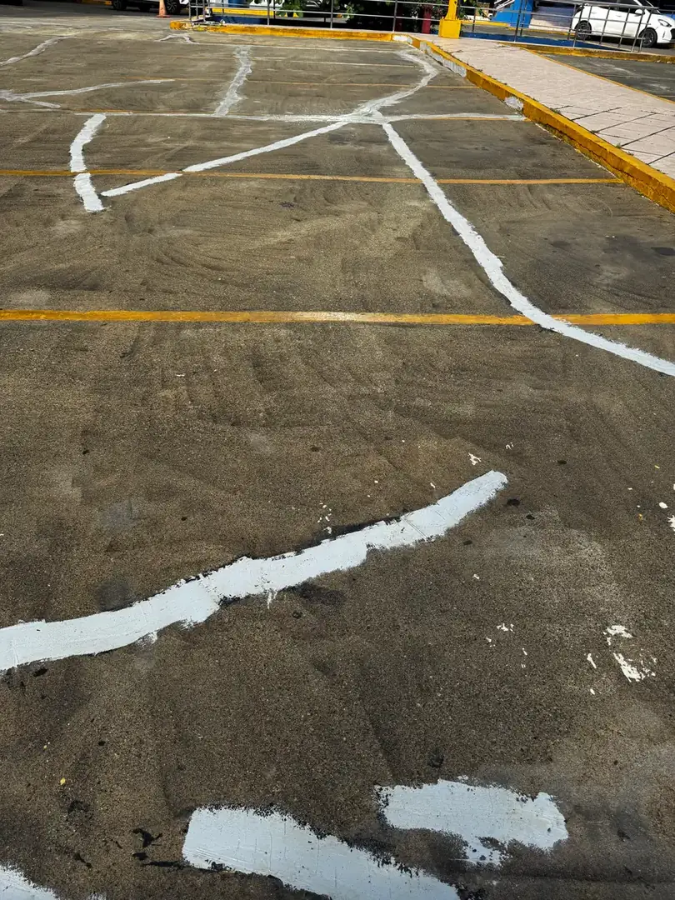
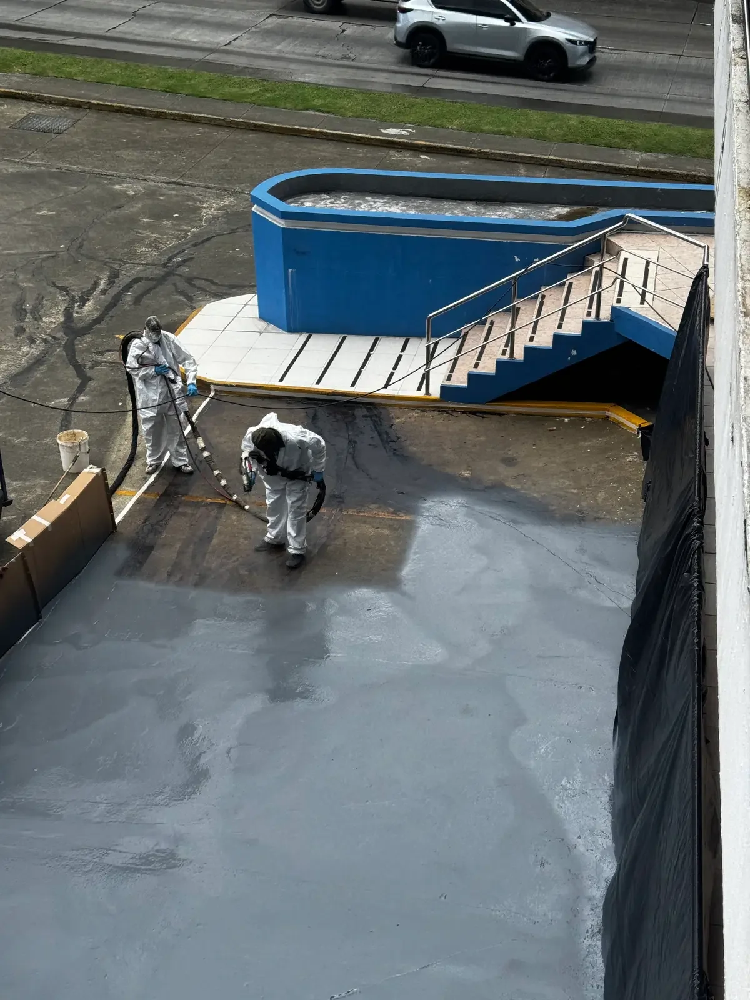

Impermeabilización · Panamá
Membrana continua.
Cero juntas.
Cero filtraciones.
Sun Tower Mall: 130 m² de losa sellados en un día. Pida su diagnóstico sin costo.
El sistema se elige por la superficie.
La poliurea es nuestro sistema principal. También aplicamos otros cuando la superficie o el uso lo piden. En el diagnóstico sin costo le recomendamos el que corresponde.
Poliurea en caliente · sistema principal
Capa continua aplicada con máquina, sin juntas. Para losas, techos, estacionamientos y pisos industriales.
Ver detalle
Poliurea en frío
Capa de poliurea que se aplica en frío. Para terrazas, balcones, techos metálicos y zonas húmedas.
Ver detallePoliuretano
Capa líquida que se estira y sobre la que se puede caminar. Pensado para superficies de cemento con tráfico pesado. Lo confirmamos en el diagnóstico. También sirve para renovar un piso sin demolerlo, aplicándola sobre la cerámica.
Ver detalleAcrílico
Capa a base de agua para azoteas, terrazas y techos. Si el agua se acumula, lo revisamos en el diagnóstico sin costo.
Ver detallePolímero MS
Sellador flexible para reparar filtraciones, uniones de tejados, canaletas y entradas de tuberías.
Ver detalleCementicio
Capa a base de cemento y polímeros. Para baños, terrazas y depósitos de agua.
Ver detalle
La poliurea no siempre es la respuesta. Se lo decimos en el diagnóstico.
La poliurea en cifras, no en discurso.
Valores de la ficha técnica del sistema de poliurea en caliente. Pida la ficha completa por WhatsApp.
Tres pasos. Ningún precio de catálogo.
El costo depende de la superficie, del acceso y del área real. Por eso cada proyecto se cotiza por separado, nunca por tabla de precios.
Usted nos escribe o nos deja sus datos
Comparta el tipo de superficie, el área aproximada y el problema que enfrenta, por WhatsApp o en el formulario. Sin costo.
Evaluamos su caso
Con esa información —o una visita de nuestro equipo si el proyecto lo requiere— calculamos el precio real según la superficie y el acceso.
Usted recibe su cotización
Precio por proyecto, garantía por escrito y fecha de aplicación, todo por escrito.

Sun Tower Mall: 130 m² de losa sellados en un día.
130 m² de losa de estacionamiento que dejaba pasar agua, sellados en un día con una membrana continua de poliurea. La segunda etapa, de 370,25 m², está en curso.
Las aplicaciones las hace el equipo de Polysellos, con traje de protección. Detrás de cada obra hay una empresa registrada en Panamá.
POLYSELLOS, S.E.P. · RUC 155774835-2-2025 DV9
Así se aplica

1. Limpieza 
2. Fisuras selladas 
3. Aplicación 4. Terminado
Lo que más nos preguntan.
Si su duda no está aquí, escríbanos por WhatsApp. Le respondemos en horario de oficina.
¿El diagnóstico tiene costo?
+
No. Evaluamos su superficie y entregamos un diagnóstico técnico sin costo ni compromiso antes de cotizar.
¿Cuánto cuesta impermeabilizar mi techo?
+
No hay un precio por metro cuadrado que sirva para todos los casos. El costo depende de la superficie, del área real, del acceso y del estado en que esté: dos losas del mismo tamaño pueden costar distinto. Escríbanos con el tipo de superficie, el área aproximada y una foto si la tiene. El diagnóstico es sin costo y con eso le damos el precio de su caso.
¿Cuánto tiempo toma la aplicación?
+
La poliurea en caliente llega al gel (lo que tarda la mezcla en dejar de ser líquida) en 45 segundos o menos. Se aplica por tramos; cada tramo trabajado debe quedar libre de peso y de cosas apiladas durante las primeras 24 horas. En los demás sistemas los tiempos son otros y se los indicamos en el diagnóstico sin costo.
¿Debo detener mis operaciones?
+
Con poliurea en caliente se trabaja por secciones, y cada tramo tratado debe quedar libre de peso y de cosas apiladas durante las primeras 24 horas. En los demás sistemas se lo indicamos en el diagnóstico.
¿Se puede aplicar con lluvia o humedad?
+
Con poliurea depende del estado de la superficie: la superficie debe estar suficientemente seca al aplicar, y lo revisamos antes de empezar. Con lluvia intensa no se aplica, por la seguridad de los trabajadores.
¿Resiste el sol directo sin dañarse?
+
Qué tan bien aguanta el sol depende del sistema y del acabado. Escríbanos y le indicamos cuál corresponde a su superficie.
¿Funciona sobre cualquier superficie?
+
Se adhiere a concreto y metal cuando la superficie se prepara con la capa base que corresponde. El diagnóstico revisa cada caso.
¿Cómo se elige el sistema de impermeabilización?
+
Depende de la superficie, del uso, de la pendiente (la inclinación que hace correr el agua) y del estado en que esté. Aplicamos poliurea como sistema principal, y también poliurea en frío, acrílico, poliuretano, polímero MS y cementicio. En el diagnóstico sin costo le recomendamos el que corresponde, aunque no sea la poliurea.
¿Cómo sé si la filtración viene de la losa o de una tubería?
+
Una filtración de losa suele aparecer o aumentar con la lluvia, mientras que la de una tubería también aparece en días secos. Envíenos una foto de la mancha y del techo; en el diagnóstico sin costo confirmamos el origen antes de cotizar.
¿Qué cubre la garantía?
+
La garantía se entrega por escrito y cubre los defectos de aplicación de la membrana (la capa continua). No cubre fuerza mayor (hechos que nadie puede controlar), perforaciones ni trabajos hechos después por otras personas. Tampoco cubre filtraciones que vengan de fuera del área trabajada, como grietas en la estructura o agua acumulada por falta de inclinación.
¿Qué pasa si vuelve a filtrar?
+
Nos avisa por escrito y vamos al lugar a revisar de dónde viene el agua. Si es un defecto de aplicación, se corrige sin costo, según los términos de la garantía escrita. Si el origen no tiene que ver con lo contratado, se lo informamos por escrito con las razones y cotizamos la solución aparte, sin cobrar la inspección.
¿Qué zonas atienden?
+
Atendemos Ciudad de Panamá, la Provincia de Panamá, Panamá Oeste y Colón. Si su proyecto está en otra zona, escríbanos y evaluamos cada caso.
Cuéntenos de su proyecto.
Envíe su ubicación, el área aproximada y una foto si la tiene a la mano. Le decimos qué sistema corresponde y qué no.